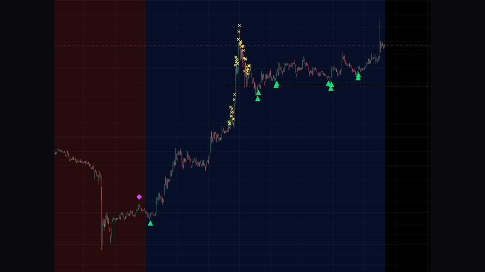
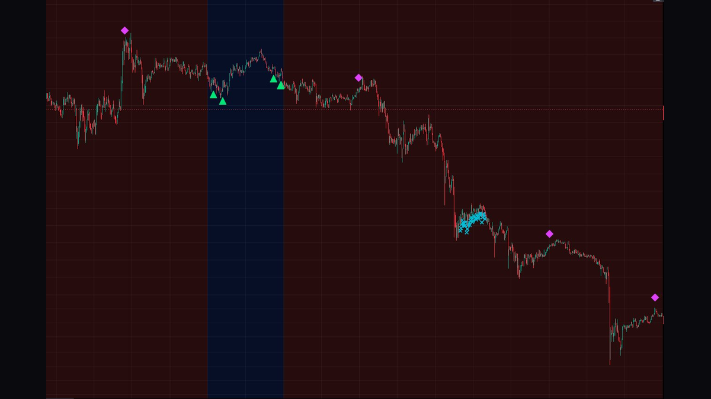
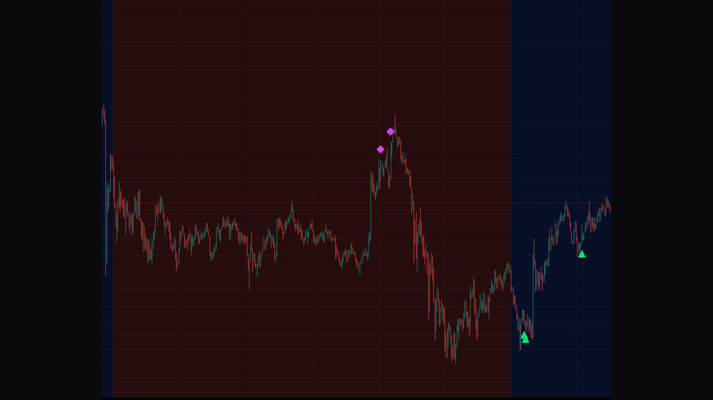
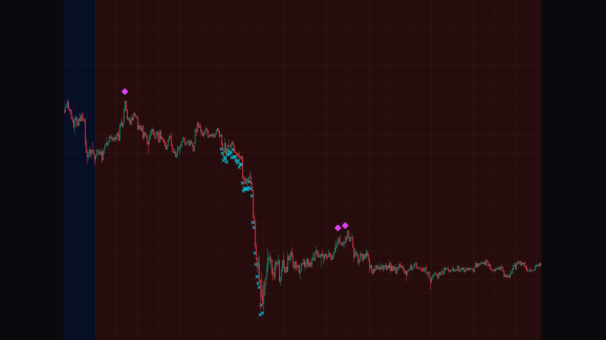

AlphaEdge · Exclusive Indicator
추세를 읽고, 진입을 잡고, 익절 타이밍을 포착하는
올인원 트레이딩 시그널 지표
All-in-one trading signal indicator
for trend, entry & take-profit timing
一体化交易信号指标
精准捕捉趋势、入场与止盈时机
トレンド・エントリー・利確タイミングを捉える
オールインワン取引シグナル指標
"배경색만 알아도
손실을 막을 수 있다"
"Know the background color,
prevent the loss"
"只要读懂背景色
就能避免亏损"
"背景色を知るだけで
損失を防げる"
대부분의 트레이더가 손실을 보는 이유는 단 하나,
추세를 무시하고 역방향 포지션을 잡기 때문입니다.
Market Compass Pro는 배경색으로 지금 어떤 포지션만 쳐야 하는지를 알려줍니다.
Most traders lose money for one simple reason —
they ignore the trend and trade against it.
Market Compass Pro uses background color to tell you exactly which direction to trade.
大多数交易者亏损的原因只有一个——
忽视趋势，逆势开仓。
Market Compass Pro通过背景色告诉您当前只能做哪个方向的仓位。
ほとんどのトレーダーが損失を出す理由はただ一つ——
トレンドを無視して逆方向のポジションを取ること。
Market Compass Proは背景色で今どの方向だけ取引すべきかを教えてくれます。
롱만 치는 구간 Long Only Zone 只做多区间 ロングのみのゾーン
✓ 롱 진입 가능
✓ Long Allowed
✓ 可以做多
✓ ロング可能
✗ 숏 진입 금지
✗ Short Forbidden
✗ 禁止做空
✗ ショート禁止
파란 배경이 켜지는 순간, 시장은 상승 추세입니다. 이 구간에서는 오직 롱 포지션만 진입해야 합니다. 숏을 치고 싶은 충동이 와도 배경이 파랗다면 절대 금지입니다.
When the blue background activates, the market is in an uptrend. Only long positions should be entered in this zone. No matter how tempting a short may look — if the background is blue, it's strictly forbidden.
当蓝色背景亮起时，市场处于上升趋势。此区间只能开多仓。无论做空的冲动多强——背景是蓝色时，绝对禁止做空。
青い背景が点灯する瞬間、市場は上昇トレンドです。このゾーンではロングポジションのみ入ってください。ショートしたい衝動があっても、背景が青ければ絶対禁止です。
숏만 치는 구간 Short Only Zone 只做空区间 ショートのみのゾーン
✓ 숏 진입 가능
✓ Short Allowed
✓ 可以做空
✓ ショート可能
✗ 롱 진입 금지
✗ Long Forbidden
✗ 禁止做多
✗ ロング禁止
빨간 배경이 켜지는 순간, 시장은 하락 추세입니다. 이 구간에서는 오직 숏 포지션만 진입해야 합니다. 반등이 와도 배경이 빨갛다면 롱은 절대 금지입니다.
When the red background activates, the market is in a downtrend. Only short positions should be entered in this zone. Even during a bounce — if the background is red, longs are strictly forbidden.
当红色背景亮起时，市场处于下降趋势。此区间只能开空仓。即使出现反弹——背景是红色时，绝对禁止做多。
赤い背景が点灯する瞬間、市場は下降トレンドです。このゾーンではショートポジションのみ入ってください。反発があっても、背景が赤ければロングは絶対禁止です。
ORANGE LINE · TREND BASELINE
오렌지 점선 — 시장의 중심축 Orange Dashed Line — Market Axis 橙色虚线 — 市场中轴线 オレンジ破線 — 市場の中心軸
차트에 표시되는 오렌지색 점선은 시장의 무게중심입니다.
현재 가격이 이 선을 기준으로 어디에 있는지만 봐도 추세의 강도를 파악할 수 있습니다.
The orange dashed line on the chart represents the market's center of gravity.
Simply knowing where the current price sits relative to this line reveals the strength of the trend.
图表上的橙色虚线代表市场的重心。
只需观察当前价格相对于这条线的位置，即可判断趋势强度。
チャートに表示されるオレンジの破線は市場の重心です。
現在の価格がこの線に対してどこにあるかを見るだけで、トレンドの強度を把握できます。
ABOVE LINE
롱 세력이 강한 구간 Bull power dominant 多方力量强势
가격이 오렌지 라인 위에 있을수록 매수 세력이 강하고 상승 모멘텀이 살아있습니다. 롱 진입 시 더욱 유리한 환경입니다.
The higher above the orange line, the stronger the buying pressure and upward momentum. This creates a more favorable environment for long entries.
价格越高于橙色线，买方力量越强，上涨动能越足。这为做多创造了更有利的环境。
価格がオレンジラインより高いほど、買い勢力が強く上昇モメンタムが生きています。ロングエントリーに有利な環境です。
BELOW LINE
숏 세력이 강한 구간 Bear power dominant 空方力量强势
가격이 오렌지 라인 아래에 있을수록 매도 세력이 강하고 하락 모멘텀이 살아있습니다. 숏 진입 시 더욱 유리한 환경입니다.
The lower below the orange line, the stronger the selling pressure and downward momentum. This creates a more favorable environment for short entries.
价格越低于橙色线，卖方力量越强，下跌动能越足。这为做空创造了更有利的环境。
価格がオレンジラインより低いほど、売り勢力が強く下落モメンタムが生きています。ショートエントリーに有利な環境です。
배경색으로 방향을 정하고,
오렌지 라인으로 세력을 확인하고,
시그널로 타이밍을 잡는다.
이 세 가지만 지켜도 불필요한 손실의 대부분을 막을 수 있습니다.
Set your direction with the background color,
confirm momentum with the orange line,
and time your entry with the signal.
Following these three rules alone eliminates most unnecessary losses.
用背景色确定方向，
用橙色线确认力量，
用信号把握时机。
只要遵守这三条规则，就能避免大部分不必要的亏损。
背景色で方向を決め、
オレンジラインで勢力を確認し、
シグナルでタイミングを取る。
この3つを守るだけで、不必要な損失のほとんどを防ぐことができます。
롱 진입Long Entry做多入场ロングエントリー
LONG ENTRY파란 배경에서 최적의 매수 타이밍을 포착합니다
Catches the best buy timing in the blue zone
在蓝色背景下捕捉最佳买入时机
青いゾーンで最適な買いタイミングを捉えます
숏 진입Short Entry做空入场ショートエントリー
SHORT ENTRY빨간 배경에서 최적의 매도 타이밍을 포착합니다
Catches the best sell timing in the red zone
在红色背景下捕捉最佳卖出时机
赤いゾーンで最適な売りタイミングを捉えます
롱 익절Long TP多仓止盈ロング利確
LONG TAKE PROFIT롱 포지션의 최적 익절 타이밍을 알려줍니다
Signals the optimal take-profit for long positions
提示多仓最佳止盈时机
ロングポジションの最適な利確タイミングをお知らせします
숏 익절Short TP空仓止盈ショート利確
SHORT TAKE PROFIT숏 포지션의 최적 익절 타이밍을 알려줍니다
Signals the optimal take-profit for short positions
提示空仓最佳止盈时机
ショートポジションの最適な利確タイミングをお知らせします

빨간 배경(하락)에서 파란 배경(상승)으로 전환되는 시점, 롱 진입 시그널(▲)이 발생하고 이후 롱 익절 시그널(✕ 노란색)이 연속으로 포착된 예시입니다. 오렌지 라인 위에서 롱 진입이 이루어져 더욱 유리한 환경이었습니다.
An example where the background transitions from red (bear) to blue (bull), triggering long entry signals (▲) followed by a series of long take-profit signals (✕ yellow). Long entries were made above the orange line, providing a more favorable environment.
背景从红色（熊市）转为蓝色（牛市）时，触发做多入场信号（▲），随后连续出现多仓止盈信号（✕ 黄色）的示例。做多入场均在橙色线上方进行，环境更为有利。
背景が赤（ベア）から青（ブル）に転換する際にロングエントリーシグナル（▲）が発生し、その後ロング利確シグナル（✕ 黄色）が連続して現れた例です。ロングエントリーはすべてオレンジラインの上で行われ、より有利な環境でした。

파란 배경에서 롱 진입 후 빨간 배경으로 전환, 숏 익절 시그널(✕ 하늘색)과 숏 진입 시그널(◆ 핑크)이 발생한 예시입니다. 배경색 전환만 따라가도 방향을 바꿔 대응할 수 있습니다.
An example of long entries during the blue zone, followed by a transition to red, triggering short take-profit (✕ cyan) and short entry signals (◆ pink). Simply following the background color allows you to switch directions effectively.
蓝色区间做多入场后，背景转为红色，触发空仓止盈信号（✕ 青色）和做空入场信号（◆ 粉色）的示例。只需跟随背景色，即可有效切换方向。
青いゾーンでロングエントリー後、背景が赤に転換し、ショート利確シグナル（✕ シアン）とショートエントリーシグナル（◆ ピンク）が発生した例です。背景色に従うだけで方向転換に対応できます。

빨간 배경에서 숏 진입(◆) 후 파란 배경으로 전환되며 롱 진입(▲) 시그널이 발생한 추세 전환 예시입니다. 오렌지 라인이 중심축 역할을 하며 전환 타이밍을 확인할 수 있습니다.
A trend reversal example where short entries (◆) occur in the red zone, followed by a transition to blue triggering long entry signals (▲). The orange line acts as the central axis, confirming the reversal timing.
红色区间出现做空入场（◆）后，背景转为蓝色并触发做多入场信号（▲）的趋势转换示例。橙色线作为中轴线，帮助确认转换时机。
赤いゾーンでショートエントリー（◆）後、青に転換してロングエントリーシグナル（▲）が発生したトレンド転換の例です。オレンジラインが中心軸として転換タイミングを確認します。

빨간 배경에서 숏 진입(◆) 후 급락 구간에서 숏 익절 시그널(✕ 하늘색)이 연속으로 발생한 예시입니다. 하락 추세에서 숏만 치는 원칙을 지켰을 때 최대 수익을 낼 수 있음을 보여줍니다.
An example of short entries (◆) in the red zone followed by a series of short take-profit signals (✕ cyan) during a sharp drop. This demonstrates the maximum profit potential when strictly following the short-only rule in a downtrend.
红色区间出现做空入场（◆）后，急跌区间连续出现空仓止盈信号（✕ 青色）的示例。展示了在下降趋势中严格遵守只做空原则时的最大盈利潜力。
赤いゾーンでショートエントリー（◆）後、急落区間でショート利確シグナル（✕ シアン）が連続して発生した例です。下降トレンドでショートのみのルールを守ったときの最大利益の可能性を示しています。
롱 진입Long Entry做多入场
LONG ENTRY파란 배경(상승 추세) + 5분봉 모멘텀 지표 과매도 구간 상향돌파 시 시그널 발생
Blue background (uptrend) + 5-min momentum indicator breaks above oversold zone
蓝色背景（上升趋势）+ 5分钟动量指标向上突破超卖区间时产生信号
青い背景（上昇トレンド）+ 5分足モメンタム指標が売られすぎゾーンを上抜け
숏 진입Short Entry做空入场
SHORT ENTRY빨간 배경(하락 추세) + 3분봉 모멘텀 지표 과매수 구간 상향돌파 시 시그널 발생
Red background (downtrend) + 3-min momentum indicator breaks above overbought zone
红色背景（下降趋势）+ 3分钟动量指标向上突破超买区间时产生信号
赤い背景（下降トレンド）+ 3分足モメンタム指標が買われすぎゾーンを上抜け
롱 익절Long TP多仓止盈
LONG TAKE PROFIT파란 배경(상승 추세) + 2시간봉 추세 지표 과매수 구간 상향돌파 시 시그널 발생
Blue background (uptrend) + 2H trend indicator breaks above overbought zone
蓝色背景（上升趋势）+ 2小时趋势指标向上突破超买区间时产生信号
青い背景（上昇トレンド）+ 2時間足トレンド指標が買われすぎゾーンを上抜け
숏 익절Short TP空仓止盈
SHORT TAKE PROFIT빨간 배경(하락 추세) + 2시간봉 추세 지표 과매도 구간 하향돌파 시 시그널 발생
Red background (downtrend) + 2H trend indicator breaks below oversold zone
红色背景（下降趋势）+ 2小时趋势指标向下突破超卖区间时产生信号
赤い背景（下降トレンド）+ 2時間足トレンド指標が売られすぎゾーンを下抜け
STEP 1 · 첫 달 신규 신청 조건 STEP 1 · FIRST MONTH — NEW APPLICATION STEP 1 · 首月新申请条件
BingX 누적 거래대금 $200,000 달성 Reach $200,000 in BingX Volume BingX累计交易额达$200,000 BingX取引額$200,000達成
FIRST MONTH CONDITION아래 링크를 통해 BingX에 신규 가입 후, 선물 거래 기준 누적 거래대금 $200,000을 달성하면 지표를 신청할 수 있습니다. 레버리지 포함 금액이며, 이 조건만 충족하면 누구나 첫 달 신청이 가능합니다.
Sign up for BingX via the link below and reach $200,000 in cumulative futures volume (leverage included). Anyone who meets this condition can apply for their first month — no ranking required.
通过下方链接新注册BingX，期货累计交易额（含杠杆）达到$200,000即可申请指标。满足此条件的任何人均可申请首月使用——无需排名。
下のリンクから新規BingX登録後、先物取引累計額（レバレッジ込み）$200,000を達成すれば誰でも初月申請可能です。ランキング不要。
STEP 2 · 다음 달 갱신 조건 STEP 2 · RENEWAL — NEXT MONTH STEP 2 · 续期条件（次月起）
지표 이용자 거래량 순위 TOP 50 유지 Maintain TOP 50 Volume Among Active Users 在活跃用户中保持交易量前50名 アクティブユーザー内取引量TOP50維持
RENEWAL CONDITION계속 사용을 원하시면 다음 달 재신청을 하시면 됩니다. 단, 현재 지표를 이용 중인 사람들의 거래량 순위에서 상위 50위 안에 들어야 승인이 됩니다. 최대 이용 인원이 50명이기 때문에 거래량이 낮으면 승인이 거절될 수 있습니다.
To continue using the indicator, simply re-apply the following month. However, you must rank within the top 50 by trading volume among all current users. Since the maximum is 50 users, low volume may result in rejection.
如需继续使用指标，下月重新申请即可。但您必须在所有当前用户中的交易量排名进入前50名。由于最多限50人，交易量低可能导致申请被拒。
継続使用希望の場合は翌月再申請してください。ただし、現在の全ユーザー中の取引量ランキングで上位50位以内に入る必要があります。最大50名のため、取引量が低いと却下される場合があります。
BingX 가입Sign up for BingX注册BingXBingXに登録
반드시 아래 링크를 통해 BingX에 가입해야 조건이 인정됩니다. 이미 가입된 계정은 인정되지 않습니다.
You must sign up via the link below for your volume to be tracked. Existing accounts are not eligible.
必须通过下方链接注册BingX，交易量才能被记录。已有账户不符合条件。
取引量を記録するには、必ず下のリンクからBingXに登録してください。既存のアカウントは対象外です。
bingxdao.com/invite/ZS5ZJ3 →누적 거래대금 $200,000 달성Reach $200,000 in Volume累计交易额达$200,000$200,000の取引量を達成
선물 거래 기준 레버리지 포함 누적 거래대금 $200,000을 달성합니다. 거래량 순위 50위 안에 들어야 승인이 가능합니다.
Accumulate $200,000 in futures trading volume (leverage included). You must rank within the top 50 by volume to be approved.
期货交易累计交易额须达到$200,000（含杠杆）。须在交易量前50名内方可获批。
先物取引の累計取引額（レバレッジ込み）$200,000を達成してください。取引量上位50位以内に入る必要があります。
거래량 TOP 50 필수TOP 50 Volume Required需进入交易量前50名取引量TOP50必須텔레그램으로 BingX UID 전송Send BingX UID via Telegram通过Telegram发送BingX UIDTelegramでBingX UIDを送信
조건 달성 후 아래 텔레그램으로 BingX UID를 전송해 주세요. 확인 후 트레이딩뷰 계정으로 30일 지표를 공유해드립니다.
Once conditions are met, send your BingX UID to the Telegram below. After verification, the indicator will be shared to your TradingView for 30 days.
达成条件后，请将您的BingX UID发送至下方Telegram。核实后，指标将共享至您的TradingView账户30天。
条件達成後、下記TelegramにBingX UIDを送信してください。確認後、TradingViewアカウントに30日間指標を共有します。
@sckim4441 Telegram →TELEGRAM · 지표 신청 및 문의Apply & Inquiries申请与咨询申請・お問い合わせ
@sckim4441
BingX UID를 텔레그램으로 전송하시면
거래량 확인 후 트레이딩뷰 30일 공유를 진행해드립니다
Send your BingX UID via Telegram.
After volume verification, we'll share the indicator to your TradingView for 30 days.
通过Telegram发送您的BingX UID。
核实交易量后，我们将把指标共享至您的TradingView账户30天。
TelegramでBingX UIDを送信してください。
取引量確認後、TradingViewアカウントに30日間指標を共有します。